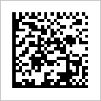
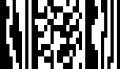
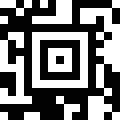
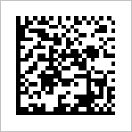
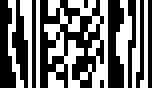
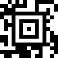
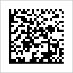
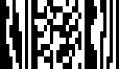
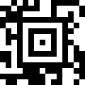

Barcode Scanner comprend également comment lire deux dimensions, comme les codes-barres QR Codes et les codes Data Matrix. Par exemple, les codes ci-dessous contiennent un lien hypertexte vers la page d'accueil du projet ZXing:



Vous pouvez également représenter des informations de contact dans un QR Code, et le mettre sur une carte de visite ou un site Web. Lorsque vous scannez, l'écran de résultats fournit un choix d'actions:

Outre les URL et les informations de contact, les codes QR peuvent aussi contenir:
Traduit par Google Translate.